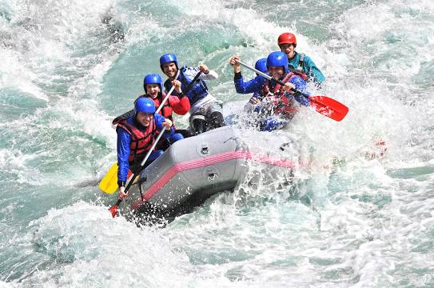

Sri Pada / Adam's Peak

Adam's Peak is a 2,243 m tall conical mountain located in central Sri Lanka. It is well known for the Sri Pada, i.e., "sacred footprint", a 1.8 m rock formation near the summit, which in Buddhist tradition is held to be the footprint of the Buddha, in Hindu tradition that of Hanuman or Shiva, i.e., "Mountain of Shiva's Light", and in some Islamic and Christian traditions that of Adam, or that of St. Thomas.
Elephant Transit Home
The Udawalawe Elephant Transfer Home is a facility within Udawalawe National Park in Sri Lanka that was established in 1995 by the Sri Lanka Department of Wildlife Conservation. Its primary objective is to rehabilitate orphaned elephant calves for ultimate release back into the wild.
Pahanthudawa Waterfall

Waterfall tumbling into a natural pool
Adventure LK white water rafting kitulgala
Boasting about adventure sporting, Kitulagala is a town located in West of the road from Kandy to Nuwara Eliya. It's a town located in amid tickly forest hills. It has been once a filming place for the David Lean's 1957 Oscar-winning epic "Bridge on the River Kwai" on the banks of Kelani River. Most visitors for the adventure sporting are from Colombo. The Kitulgala's main attraction is White water rafting where you can ride the tides of Kelani River. Other than that it's popular for sports like confidence jump, Stream Sliding, Waterfall abseiling, Jungle trekking. Bird watching and cave exploration and last but not least river trips and expeditions.
Katugas Ella (Waterfall)

Dec 2017 So beautiful place to visit. Roads are good. The place is easy to reach. We never looks like that. Attraction place.